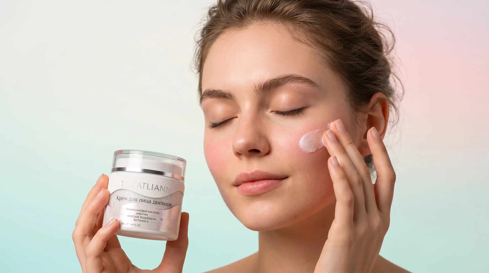
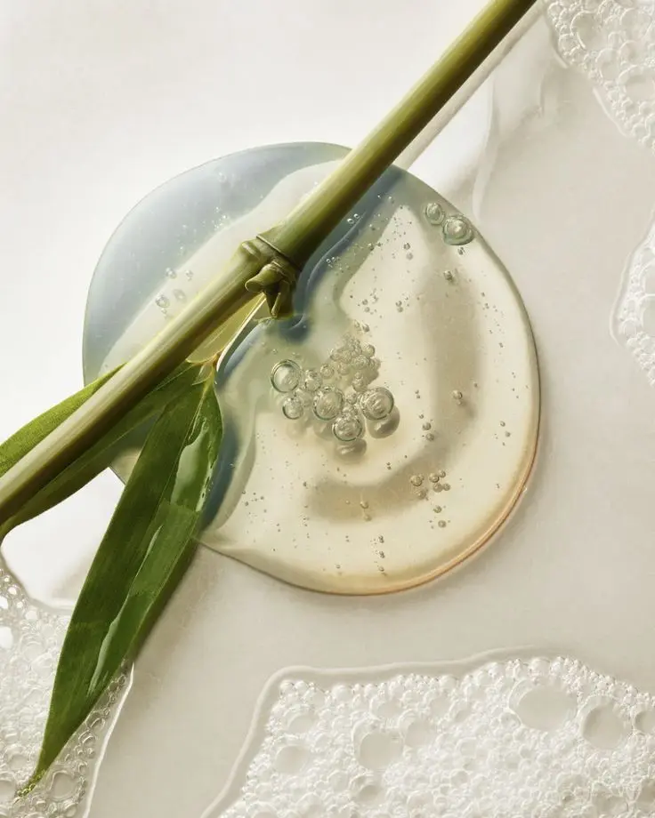
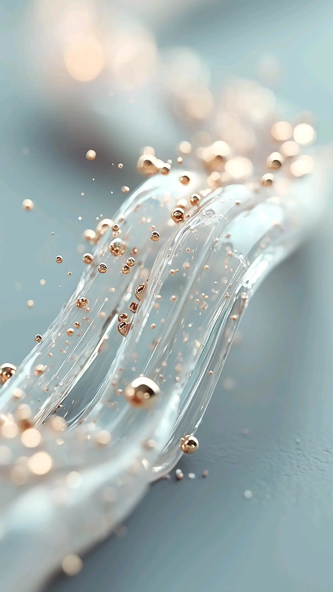
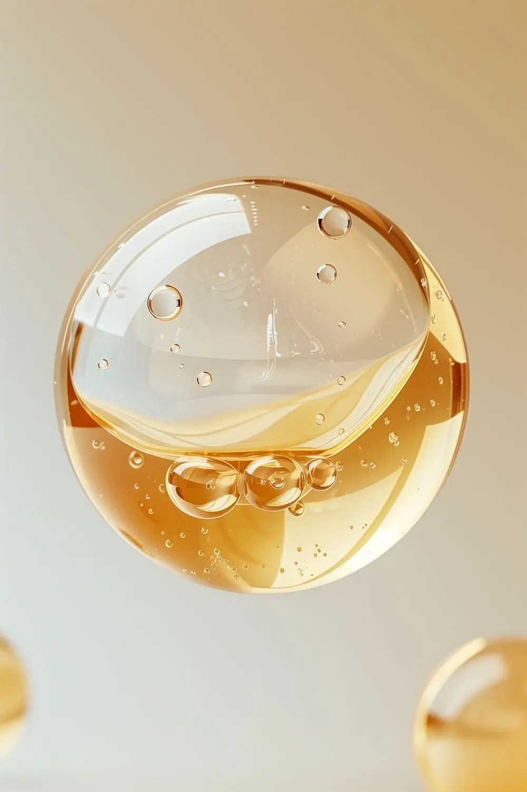
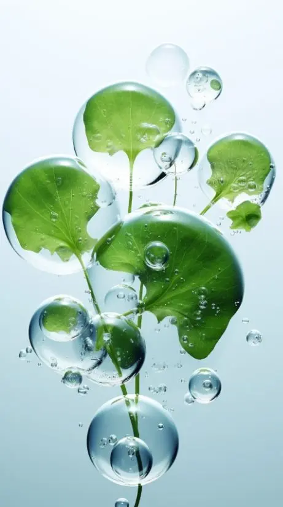
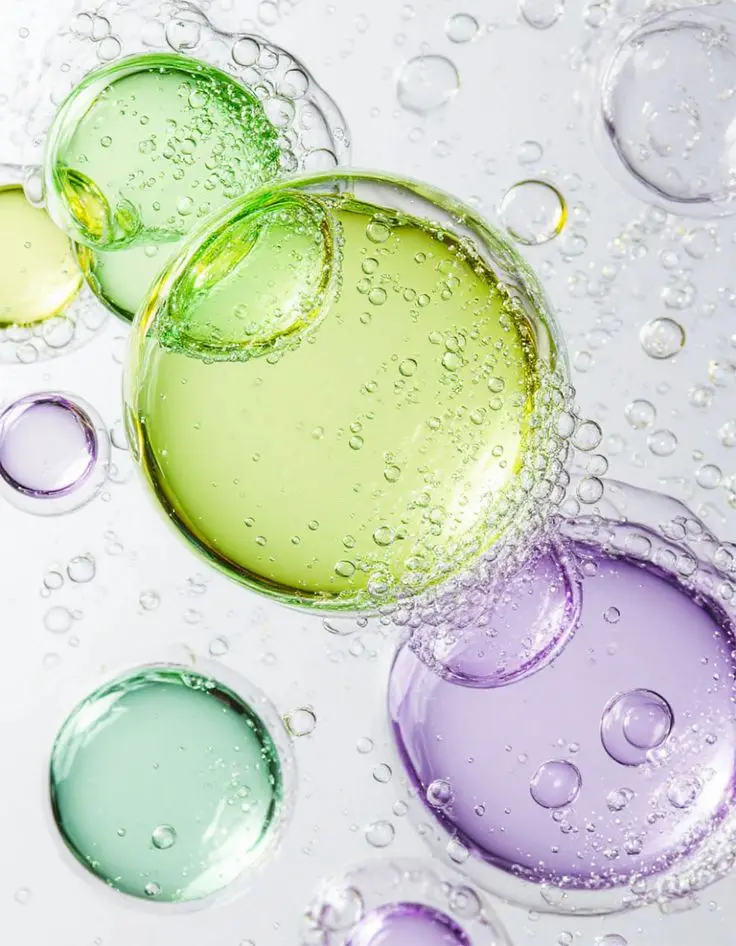
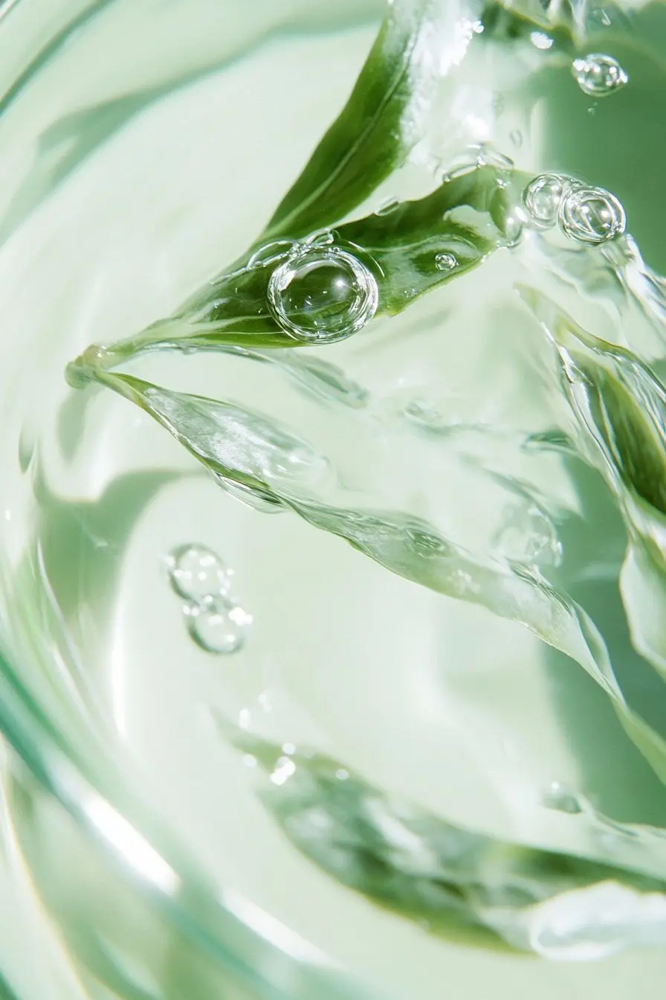

Невесомая воздушная формула с polish-эффектом бережно очищает кожу от загрязнений, остатков пота и себума. Она без усилий удаляет макияж, не нарушая естественный защитный барьер кожи и обеспечивая ей глубокое увлажнение.
аллантоин в составе активно увлажняет и полирует верхний слой кожи, придавая ей гладкость и мягкость
Сияние и здоровье:
комбинация транексамовой кислоты и ниацинамида эффективно осветляет кожу, устраняет пигментацию и следы постакне, делая её сияющей и здоровой
Улучшение микроциркуляции:
молочная кислота способствует улучшению микроциркуляции, выравниванию тона и уменьшению покраснений
Разработанная для бережного очищения кожи, пенка минимизирует раздражение и защищает кожный барьер. Не содержит агрессивных ПАВ и идеально подходит для чувствительной кожи и обладательницам наращённых ресниц. Обладает успокаивающим, противовоспалительным и регенерирующим действием. Имеет слабокислый pH 5.5, что поддерживает здоровье вашего микробиома, не вызывая сухости и стянутости кожи
Используйте ежедневно утром или вечером. Нанесите 3 нажатия пенки на увлажнённое водой лицо, распределите по лицу, шее и декольте массажными движениями. Обильно смойте прохладной водой. Пенка также подходит для снятия макияжа с глаз. Храните при комнатной температуре
аллантоин
Аллантоин – биоактивное вещество, обладающее выраженным успокаивающим, заживляющим и смягчающим действием. Применяется для ухода за чувствительной, раздражённой и повреждённой кожей, а также для стимуляции регенерации и снятия воспалений
молочная кислота
молочная кислота – альфагидроксикислота, не токсична, биологически безопасна, является «физиологическим» увлажнителем кожи. Основное назначение кислот в уходе за кожей: обновление клеток. При эффективном отшелушивании, молочная кислота также обеспечивает продолжительную гидратацию кожи, делая кожу более ровной, гладкой, эластичной. Рекомендуется при обезвоженной, дряблой коже, при мелазме, куперозе, оказывает протекцию фотостарению
транексамовая кислота
транексамовая кислота – мощный осветляющий компонент, известный своей способностью устранять стойкие пигментные пятна, вызванные мелазмой и поствоспалительной гиперпигментацией (постакне). Выравнивает тон, делает цвет лица более однородным, придаёт естественное сияние. Снижает проницаемость и ломкость капилляров, что особенно важно при розацеа и куперозе. Укрепляет кожный барьер и повышает устойчивость кожи к внешним факторам. Улучшает переносимость других средств, например, при использовании AHA-кислот
ниацинамид
ниацинамид – также известен как витамин В3 и в настоящее время является одним из наиболее эффективных и исследованных ингредиентов в косметологии. Он стал настоящим прорывом в уходе за кожей благодаря своему многофункциональному действию и поистине подходит любому типу кожи в любом возрасте: укрепляет кожный барьер, увлажняет, препятствует трансэпидермальной потере влаги, регулирует выработку себума, обладает противовоспалительными свойствами, уменьшает видимость морщин, выравнивает тон и уменьшает пигментацию
экстракт центеллы азиатской
Экстракт центеллы азиатской (готу кола) – обладает мощными антиоксидантными и успокаивающими свойствами. Оказывает ранозаживляющее действие. Стимулирует выработку собственного коллагена и гиалуроновой кислоты, улучшая упругость и увлажнённость кожи. Аминокислоты в составе обеспечивают восстановление гидролипидной мантии кожи, что существенно повышает барьерную способность эпидермиса. Богата витаминами А, С, Е и минералами, необходимыми для здоровья кожи
экстракт зелёного чая
экстракт зелёного чая – источник катехинов, мощнейший антиоксидант, идеален в рецептурах энергостимулирующей и возрастной косметики. Катехины также обладают противовоспалительными свойствами. За счёт своей вяжущей активности они значительно снижают рост бактерий

активные ингредиенты

аллантоин
– биоактивное вещество, обладающее выраженным успокаивающим, заживляющим и смягчающим действием. Применяется для ухода за чувствительной, раздражённой и повреждённой кожей, а также для стимуляции регенерации и снятия воспалений

молочная кислота
– альфагидроксикислота, не токсична, биологически безопасна, является «физиологическим» увлажнителем кожи. Основное назначение кислот в уходе за кожей: обновление клеток. При эффективном отшелушивании, молочная кислота также обеспечивает продолжительную гидратацию кожи, делая кожу более ровной, гладкой, эластичной. Рекомендуется при обезвоженной, дряблой коже, при мелазме, куперозе, оказывает протекцию фотостарению

ниацинамид
– также известен как витамин В3 и в настоящее время является одним из наиболее эффективных и исследованных ингредиентов в косметологии. Он стал настоящим прорывом в уходе за кожей благодаря своему многофункциональному действию и поистине подходит любому типу кожи в любом возрасте: укрепляет кожный барьер, увлажняет, препятствует трансэпидермальной потере влаги, регулирует выработку себума, обладает противовоспалительными свойствами, уменьшает видимость морщин, выравнивает тон и уменьшает пигментацию

экстракт центеллы азиатской
Экстракт центеллы азиатской (готу кола) – обладает мощными антиоксидантными и успокаивающими свойствами. Оказывает ранозаживляющее действие. Стимулирует выработку собственного коллагена и гиалуроновой кислоты, улучшая упругость и увлажнённость кожи. Аминокислоты в составе обеспечивают восстановление гидролипидной мантии кожи, что существенно повышает барьерную способность эпидермиса. Богата витаминами А, С, Е и минералами, необходимыми для здоровья кожи

транексамовая кислота
– мощный осветляющий компонент, известный своей способностью устранять стойкие пигментные пятна, вызванные мелазмой и поствоспалительной гиперпигментацией (постакне). Выравнивает тон, делает цвет лица более однородным, придаёт естественное сияние. Снижает проницаемость и ломкость капилляров, что особенно важно при розацеа и куперозе. Укрепляет кожный барьер и повышает устойчивость кожи к внешним факторам. Улучшает переносимость других средств, например, при использовании AHA-кислот

экстракт зелёного чая
– источник катехинов, мощнейший антиоксидант, идеален в рецептурах энергостимулирующей и возрастной косметики. Катехины также обладают противовоспалительными свойствами. За счёт своей вяжущей активности они значительно снижают рост бактерий